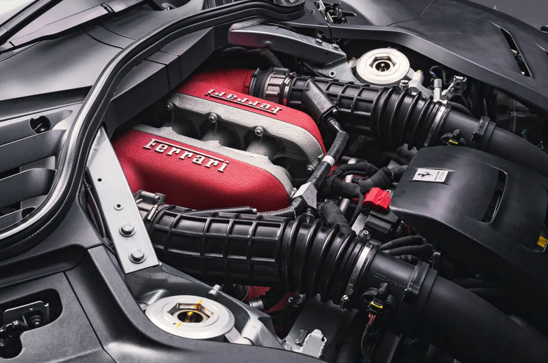

El Ferrari Purosangue es el primer coche en la historia de Ferari con cuatro puertas y cuatro plazas.
este nuevo cavallino es capaz de hacer un 0 a 100 km/h en unos 3,3 segundos y de alcanzar los 310 km/h, gracias también a una caja de cambios automática de doble embrague de 8 velocidades.
El objetivo de Maranello pasa por producir unas 10.000 unidades anuales de este modelo, algo que reforzará otra de sus características primordiales: la exclusividad. Algo que también queda claro cuando nos fijamos en su precio. Si bien aún no hay precios para España, en Italia este Ferrari Purosangue tendrá un precio de 390.000, una cifra que lo pone en lo más alto de toda la gama regular de Ferrari a excepción del SF90 Stradale. Según el informe de ventas de 2021 de la marca, indica, en su página 12, que la producción del Purosangue comenzará este mismo 2022, abriendo las reservas en 2023 e iniciando las entregas también a principios del próximo año.
Es impulsado por un poderoso V12 6.5 litros de la marca, con inyección directa de alta presión, generador de 715 hp y 716 Nm de torque a un máximo de 6.250 rpm y se destaca que el 80% de esa capacidad lo puede alcanzar a las 2.100 rpm.
El Purosangue no comparte plataforma con ningún modelo de la casa italiana, pues su chasis es completamente nuevo, la estructura inferior está fabricada en aleación de aluminio de alta resistencia con piezas de fundición huecas con paredes finas y núcleos internos. La carrocería fue desarrollada combinando aluminio, fibra de carbono y acero de alta resistencia, para garantizar la seguridad, el diseño, la aerodinámica y el mejor comportamiento deportivo.
Se destaca el techo monocasco en fibra de carbono con insonorización integrada que y ofrece niveles de rigidez equiparables a los de un techo de cristal, con un peso 20% inferior al de un techo de aluminio.
A bordo, a diferencia del diseño convencional de pantalla central, trae dos pantallas separadas, una en el puesto del conductor que entrega la información del vehículo, y frente al copilo hay otra. Cuenta con múltiples modos de conducción con el primer sistema de conducción activa de Ferrari (FAST). Los amortiguadores se apoyan en un motor eléctrico alimentado por una red de 48 V que permite que la suspensión se adapte más rápido. Sume dirección independiente a las cuatro ruedas y diferencial E-Diff para un mejor reparto del torque. Pensando en viajes familiares fuera de la ciudad, se incorporó como novedad en un vehículo de la casa italiana, la función de control de descenso en pendientes. El sistema de tracción total está conectado a una transmisión automática F1 DCT de doble embrague y ocho velocidades.
La electrificación aún puede esperar para el nuevo Ferrari Purosangue. Mientras tanto hay tiempo para aprovechar el gusto de conducir un motor de doce cilindros. De gasolina, el bloque V12 tiene capacidad de 6.5 litros y está ubicado en la parte delantera central de vehículo. La potencia es de 715 hp y 716 Nm de torque, lo que supera a Lamborghini Urus de 657 hp, Aston Martin DBX 707 de 697 hp y al Bentley Bentayga de 626 hp de potencia. La aceleración de 0 a 100 km/h se da en 3,3 segundos y la velocidad máxima llega a los 310 km/h. El sistema de frenado rápido solo necesita 32,8 metros para detenerse por completo desde los 100 km/h gracias a discos carbocerámicos de 98 mm delante y 380 mm atrás. Su precio no se confirma, pero se calcula que esté cerca de los 400 mil dólares, más de 1.760 millones de pesos COP.
